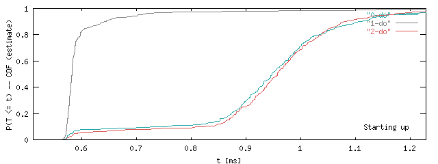
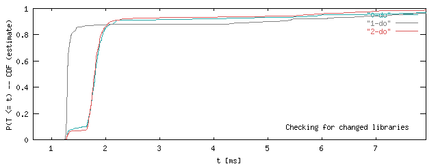
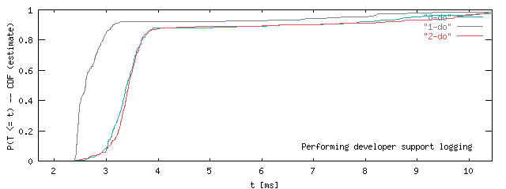
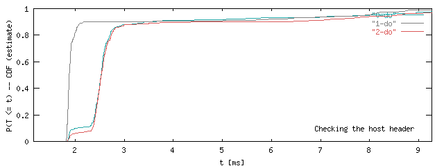
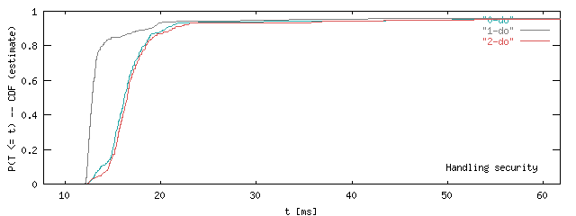
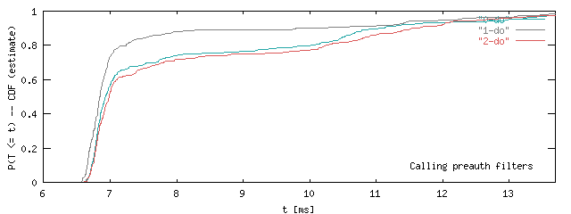
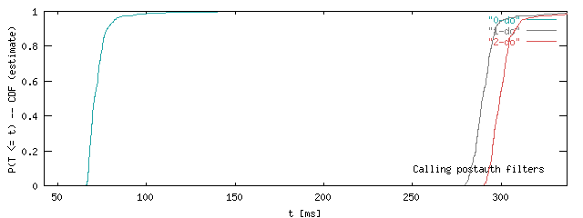
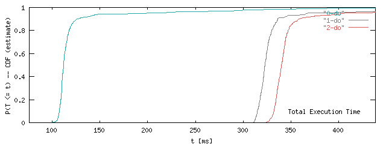
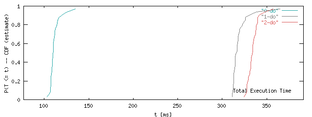

The measurements were taken on reusia.boston on 17
October 2000, with tarball acs-3-4-6-R20001008. Templating
under 3.4 is quite different; instead of a .tcl script,
datasources are defined in a .data file that has a different XML
syntax.
We have graphs for 9 stages only. While Tcl pages generate four more entries, these lack from templated pages, and hence I suppressed them. The log message that marks the beginning of each phase is written in the lower right of the graphs. Each curve curve plots 288 page requests. As I didn't back port of the configurable cache refreshing stragegy ('never' or 'always'), I show all graphs in the 'normal' colors. The label is 'do', though.









To show off the graphing method, compare the graph above with the one below, which only uses the first 32 measurements. The curves are less smooth, but the message is the same.

In ACS 3.4.6, Tcl-only pages are sereved faster than in 4.0 beta-2. The templated pages are delivered much slower. The first time the template system reads a templated page, it takes about 3 seconds! The result is cached, mitigating the problem a lot.